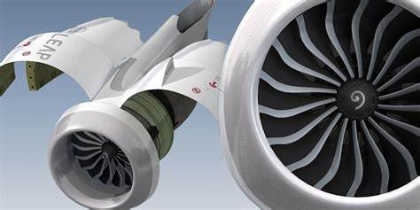

Shiraz Baloch
Hoffman Estates, 60192
sbaloch1983@gmail.com
Quaification Profile
Dynamic and results-driven quality engineering professional with over 15 years of experience in capital project management within the aviation and manufacturing sectors, Six sigma yellow belt qualified. Proven ability to enhance product quality and operational efficiency by leading projects from development through delivery, managing budgets of $10M+. Expertise in coordinating engineering teams, overseeing project execution, and facilitating continuous improvement initiatives. Strong communicator with a "can-do" attitude, adept at building relationships across diverse teams and stakeholders.
Areas of expertise
Capital project management | Engineering oversight development| Quality assurance & reliability
Continuous Improvement initiatives |Cross-functional team leadership |Effective communication & Stakeholder engagement
Professional Experience
Senior Engineer | American Airlines | Dallas, USA
- Lead quality-focused capital projects related to aircraft systems and powerplant, overseeing the entire project lifecycle from concept to closure.
- Develop and implement project plans, ensuring budget control and quality assurance throughout all phases of execution.
- Collaborate with maintenance teams to prepare Capital Appropriation Requests, aligning engineering solutions with operational needs and quality standards. Co-ordinate with Thales, Panasonic, Boeing, GE, CFM and Safran.
- Facilitate internal and external progress meetings, documenting project status, risks, and issues to ensure stakeholder alignment.
- Drive continuous improvement activities by analyzing maintenance and repair processes, resulting in enhanced operational efficiency and product quality.
